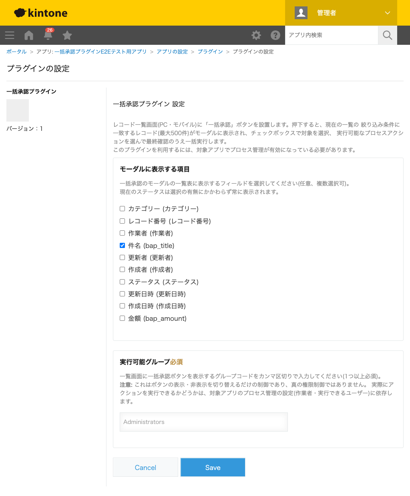

GovAppsプラグイン 安全性を確認できる無料kintoneプラグイン集
プロセス管理を使ったアプリのレコード一覧画面に「一括承認」ボタンを設置するプラグインです。ボタンを押すと、
今その一覧に表示されている絞り込み条件(kintone.app.getQueryCondition()、最大500件)に
該当するレコードがモーダルにチェックボックス付きの一覧として表示されます。承認したいレコードを選択し、
選択中のレコードの現在のステータスから実行できるプロセス管理のアクションをドロップダウンから選ぶと、
最終確認画面で実行対象件数・対象外件数(理由付き)を確認したうえで一括実行できます。次の作業者の選択が
必須になる遷移(「次のユーザーから作業者を選択」設定で候補が存在する場合)は自動実行の対象外とし、
対象外である旨を明示します。設定画面ではモーダルの一覧に表示する項目(フィールド)を選択できます。
作業者(担当者)自身が普段見ている「自分が作業者」の絞り込み済み一覧に一括承認ボタンを設置しておくと、対象レコードをボタン1つでモーダルに呼び出せます。チェックボックスで承認するレコードを選び、「承認」アクションを選択、最終確認のうえ一括で実行します。
ボタンは一覧画面の現在の絞り込み条件に一致するレコードを対象にするため、「条件A一覧」では承認、「条件B一覧」では差し戻し、のように一覧を使い分けて別々の一括処理を行えます。選択中のレコードの現在のステータスに応じて、実行できるアクションの候補が自動的に絞り込まれます。
設定画面でモーダルの一覧に表示するフィールドを選べるため、申請金額や申請者名など、承認判断に必要な項目だけを表示できます。現在のステータスは選択の有無にかかわらず常に表示されます。
対象は表形式の一覧のみです。カレンダー形式・カスタマイズ形式の一覧ではボタンは表示されません。1回の実行につき、絞り込み条件に一致するレコードのうち先頭500件までが対象です。
kintoneセキュアコーディングガイドラインに沿って実装時にチェックしています。特に重要な点は次のとおりです。
document.createElement() + textContentのみで組み立てており、innerHTMLへ動的な値を差し込む箇所はありません。kintone.api()(kintone自身への呼び出し専用の内部ラッパー)経由です。生のfetch/XMLHttpRequestは使用していません。プロセス管理の設定取得・フォームのフィールド定義取得はJavaScript API(kintone.app.getStatus()・kintone.app.getFormFields())を優先しています。kintone.user.getGroups()による表示切り替え)は、クライアント側の表示ゲートに過ぎず真の権限制御ではないことを明記しています。真の権限境界は対象アプリのプロセス管理の設定(作業者・実行できるユーザー)自体です。詳細な確認項目・確認日は下記GitHubのチェックリストに全項目を掲載しています。

「一括承認」ボタンを押すたびに、対象レコードの検索でGET /k/v1/records.jsonを1回実行します(最大500件)。
実行時は、選択したレコード数を100件ずつのバッチに分けてPUT /k/v1/records/status.jsonを実行し、
バッチ全体が失敗した場合のみそのバッチ内を1件ずつPUT /k/v1/record/status.jsonで再送します
(通常は成功するため追加実行は発生しません)。設定画面での保存・読み込み自体はkintoneのプラグイン設定機能を
使うため、追加のAPI実行はありません。